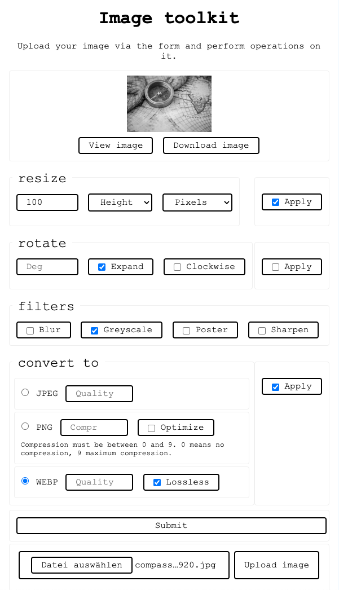

IMAGE TOOLKIT
Video Demo:
Description:
Image toolkit is a service for basic image manipulation. It features a website where the user can upload an image for processing, as well as an API, powered by Flask.
Links
- Documentation is hosted on Github
- Backend and Frontend are hosted on Python Anywhere
Installation
- Set up virtual environment:
python3 -m venv .venv - Activate virtual environment:
. .venv/bin/activate - Install dependencies:
python -m pip install -r requirements.txt
Note: You can exit the virtual environment by typing deactivate. Learn more about virtual environments and package installation.
Run the service locally
Activate the virtual environment and type flask run. If you want to use the frontend locally, you need to set up an additional local server
(for development, I used the excellent LiveServer VSCode extension) and change the
BASE_URLconstant in frontend/script.js to point to Flasks local server.
(Self-) Host the service
Refer to Flask's documentation for deploying to production. Again, for the frontend, you may need an additional server/hosting,
or to configure the WSGI server to serve the contents of the frontend directory statically. I use Python anywhere to host the demo.
Usage
via the web-interface (upload form)

Note that the web-interface implements most, but not all functionality of the API. This is intentional to further showcase the decoupled nature of this project.
via the API
There is one API endpoint, /image-process, which expects a POST request with a JSON payload.
Except the obligatory Content-Type: application/json, no additional headers and no authentication are required.
The JSON payload has two mandatory fields:
original_image: base64-encoded image.operations: array of objects that define the operations to be performed on the image. Operations will be performed in order. If an invalid operation is given, or a valid operation fails, the other operations will still be performed.
An operation object itself consists of a mandatory name field which specifies the operation that should be performed. The name is the same as the name of the processing function
that will be called to do the work.
Optionally, each operation accepts arguments that specify how the image should be processed, e.g. a width and/or height for resizing an image. Dimensions like width or height can be given to the API in different ways: Generally, it will accept units of pixels and percent. If the unit is pixels, it can be omitted, since this is assumed as the standard. These would all be valid arguments:
"width": "300px"
"width": "300" // 300px, as above
"width": 300
"width": 300.0 // this works too, but is considered bad practice
"width": "50%" // 50 percent
Optionally, within the key return_as, you can also provide a format in which the image should be returned, along with some options for image quality. Refer to the Supported formats page for more details.
If return_as is ommitted or contains an invalid format, the image will be returned in the same format in which it was submitted.
A complete payload might look like this:
{
"operations": [
{
"name": "rotate",
"degrees": 180
},
{
"name": "resize",
"width": "50%",
},
// ... any other operations you like to perform.
],
// optional return format and options
"return_as": {
"format": "webp",
"quality": 80
},
"original_image": "..." // base64-encoded image
}
API response
A successful response from the API will look like this:
{
"metadata": {
"format": "jpeg", // format of the processed image
// width and height of the processed image
"height": 374,
"width": 300
},
"processed_image": "..." // base64-encoded image
}
If you get back the original image, or some operations were not performed, this probably means you provided invalid/incomplete parameters to some operation(s). If you found a bug, feel free to open an issue.
If you really messed up the JSON payload or did not provide a correctly encoded image, you will get an error response instead:
{
"error": "No image provided." // The error message will try to explain what caused the error.
}
However, I tried to design this API pretty robust and forgiving, so (hopefully) what you'll see more often is just some operation not being performed if you forgot an argument or mistyped something.
You can look up the available processing functions and the arguments they expect in the API documentation (ignore the image argument, as this will be passed in automatically).
Accepted file formats
The supported formats page lists the formats that the API is guaranteed to accept and return. Other image formats may work as input. Refer to the pillow documentation to see which formats may work.
A short tour of the repo
This repository consists of 4 main parts:
The backend/API
This is a flask application, consisting of these files:
app.pydefines the routing and interface of the API.operations.pydefines the available image manipulation operations.formats.pydefines the supported formats that the API can convert images into.helpers.pydefines some helper functions.requirements.txtdefines the libraries used by the application.
The frontend
tbd
The documentation
The documentation is automatically generated from the README file and the docstrings from the source code of the API. It is located in the docs directory.
Tooling for the documentation:
There are a number of files dedicated to auto-generating documentation and integrating pdoc with mkdocs:
mkdocs.ymlis the configuration file for creating a static site containing the documentation.make.pyis a script that generatespdocdocumentation and moves it to a directory and format where it can be picked off bymkdocs.- The
pdoc-templatefolder contains a template override and styling forpdoc, so that it better integrates with the generatedmkdocs. - The
mk-docsfolder contains anindex.mdfile that links the README into the generated documentation andcustom.jsthat does some cosmetic changes to better integrate the documentation generated bypdoc.
Design decisions
- I decided to create just one API-endpoint and make the user provide the wanted operations as JSON payload. This is more user-friendly, because it lets you chain operations together in one single request.
- I tried out autogenerating API documentation using flaskapi and the OpenAPI spec, which is awesome in principle, but didn't convince me in the context of this project. There is only one API endpoint, which takes a lot of parameters. OpenAPI is great if you have a lot of small endpoints and methods, but that's not the case here. What I really needed was to document the single image manipulation operations. At the end, I decided to use pdoc, an easy to use library that generates pretty neat documentation and integrate it with mkdocs, linking this README file to the generated documentations index file using pymdown-extensions.
- In a similar vein, I looked into APIflask which has some neat features. But in the end I decided to stick with vanilla Flask and making some adoptions manually (e.g. making sure error responses are always sent as JSON instead of text/html). The reason is, I wanted to keep things simple and avoid the application being overloaded with features that I don't really use, especially since I decided against going with the OpenAPI approach.
- For implementing different formats in which the image can be returned, I decided to follow an approach very similar to the one for operations: Create a new file that defines saving functions and dynamically call them if a valid image format was submitted. I tried first a simpler approach with dynamically passing arguments to the
savefunction of theImageclass. This is less code, but I decided against it for 2 reasons: First, defining custom save functions allows for better auto-generated documentation. And second, perhaps more important, it allows for providing default arguments that are different from the ones provided by Pillow, and for additional validation. The chosen approach is more verbose, but I find it also more robust and explicit.
Acknowledgements
- Huge thanks to HuggingChat for providing suggestions and feeback regarding some initial design decisions (link to the chat) and for help with debugging some stuff.
- Huge thanks also to Python anywhere which provides a free hosting tier, on which this project is hosted.
- This project would not have been possible without some amazing libraries. See below for a list of projects this project relies on.
Powerd by
tbd list used libraries